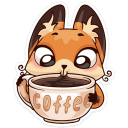

сегондя меня посетила мысль: если бы мне пришлось отказаться от кофе или от тебя, я бы отказалась от кофе.
даже если бы из Львова. даже если бы от рафа.
я знаю, что наше общение не будет длиться вечность, и что когда-нибудь ты отдалишься - или, что менее вероятно, отдалюсь я. и всё же,
пока это не случилось, хочу наслаждаться возможностью говорить с тобой каждый день. хочу наслаждаться возможностью думать о тебе каждый день.
хочу наслаждаться возможностью мечтать о том, как мы когда-нибудь встретимся.
и вообще, если мысли материальны, буду думать о тебе

Назад